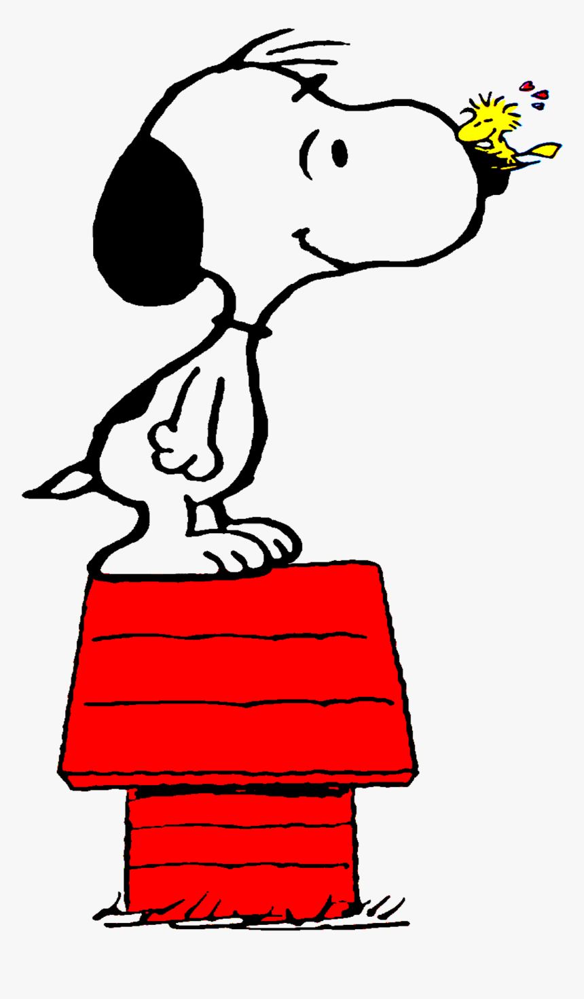

History
Snoopy and the rest of the Peanuts world have captivated readers for generations.

Learn more about how Snoopy and the Peanuts world were created from this video!

Snoopy is a beloved character from the Peanuts comic strip created by Charles M. Schulz. He is a beagle known for his imaginative adventures and his iconic red doghouse.
Breed- Beagle
Coat Color- White and Black
Height- 26 inches
Age- 75 years
Address- The Little Red Doghouse
Occupation- Varies
Nickname- Esnupi
Snoopy has had many memorable moments throughout the Peanuts series due to his
playful nature, from his imaginative adventures to his heartwarming interactions with friends.

Snoopy and the rest of the Peanuts world have captivated readers for generations.
Learn more about how Snoopy and the Peanuts world were created from this video!